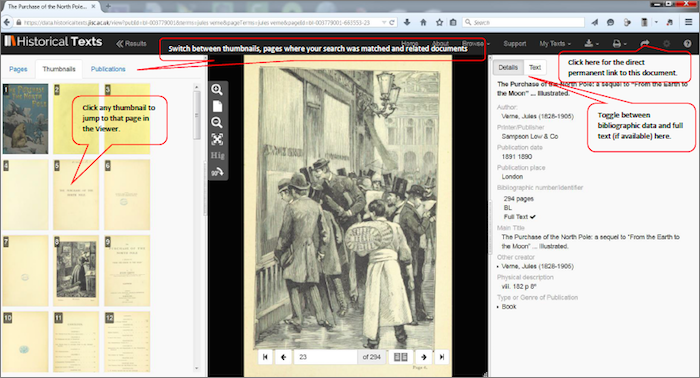

<div class="row">
    <div class="col-xs-12 topSpace">
        <div class="sideMenu">
            <div class="title">Support</div>
            <ul>
                <li><a href="/support/">Support home</a></li>
                <li><a href="/help/">Help file</a></li>
                <li><a href="/librarians/">Librarians</a></li>
                <li><a href="/faq/">FAQ</a></li>
				<li class="selected"><a href="">Quick Reference Guide</a></li>
            </ul>
        </div>

        <div class="support">

            <ol class="breadcrumb">
                <li><a href="/support/">Support home</a></li>
                <li class="active">Quick Reference Guide</li>
            </ol>

            <h1>Quick Reference Guide - TESTING TESTING 1 2 3</h1>
            
        

<p>This is the online version of the Historical Texts Quick Reference Guide. If you wish, you can download this guide as a PDF file for offline viewing: <a href="http://historicaltexts.jisc.ac.uk/files/HT-QRGv1.pdf" target="_blank" title="Historical Texts Quick Reference Guide PDF"><b> Quick Reference Guide</b></a> (PDF, 858KB).</p>

<p><strong>The Quick Reference guide will help users to get going on the Historical Texts service as quickly as possible. It isn’t intended to cover every feature or possible usage scenario.
<br />
If you have any queries or require assistance please contact the Historical Texts helpdesk at <a href="mailto:historicaltexts@jisc.ac.uk">historicaltexts@jisc.ac.uk</a></strong></p>

<h2>Historical Texts contains three collections: Early English Books Online (EEBO), Eighteenth Century Collections Online (ECCO) and British Library 19th Century Collection (BL).</h2>

<h2>Early English Books Online (EEBO)</h2>
<p>Containing the first book printed in English by William Caxton, EEBO includes over 125,000 titles published in Britain and British North America, and works in English printed elsewhere, between 1473 and 1700 covering a wealth of early modern materials</p>

<h2>Eighteenth Century Collections Online (ECCO)</h2>

<p>A digital collection of all the books published in Great Britain and its colonies during the eighteenth century, comprising some 33 million pages from more than 180,000 titles. The collection includes works in English, Dutch, French, German, Italian, Latin, Spanish and Welsh.
Eighteenth Century Collections Online contains a variety of printed materials including books, Bibles, sheet music, sermons and advertisements published from 1700–1799 and the content is comprised from eight subject areas:
History and Geography - Social Science - Fine Arts  - Music, Art & Architecture  - Medicine, Science and Technology - Literature and Language - Religion and Philosophy – Law - General Reference</p>

<h2>British Library 19th Century Collection (BL)</h2>

<p>Recently digitised versions of more than 65,000 out of copyright first editions from the 19th century, covering philosophy, history, poetry and literature. The collection extends to over 25 million pages of previously rare and inaccessible content, including the original typeface and illustrations for each title.
Works include such classics as A Christmas Carol by Charles Dickens, Mansfield Park and Emma by Jane Austen, The Return of the Native by Thomas Hardy and Mary Shelley's Frankenstein.</p>

<h2>Search View, with results shown below</h2>



<h2>Search View, expanded to show Advanced Options</h2>


<h2>Using the Viewer to look at a document</h2>


<h2>The Viewer, with the Search and Details panels open</h2>


        </div>
        </div>
    </div>